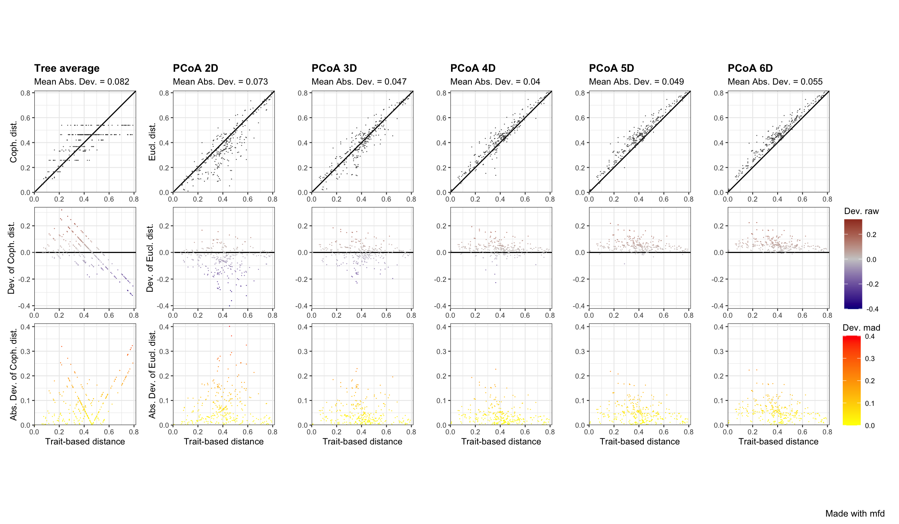
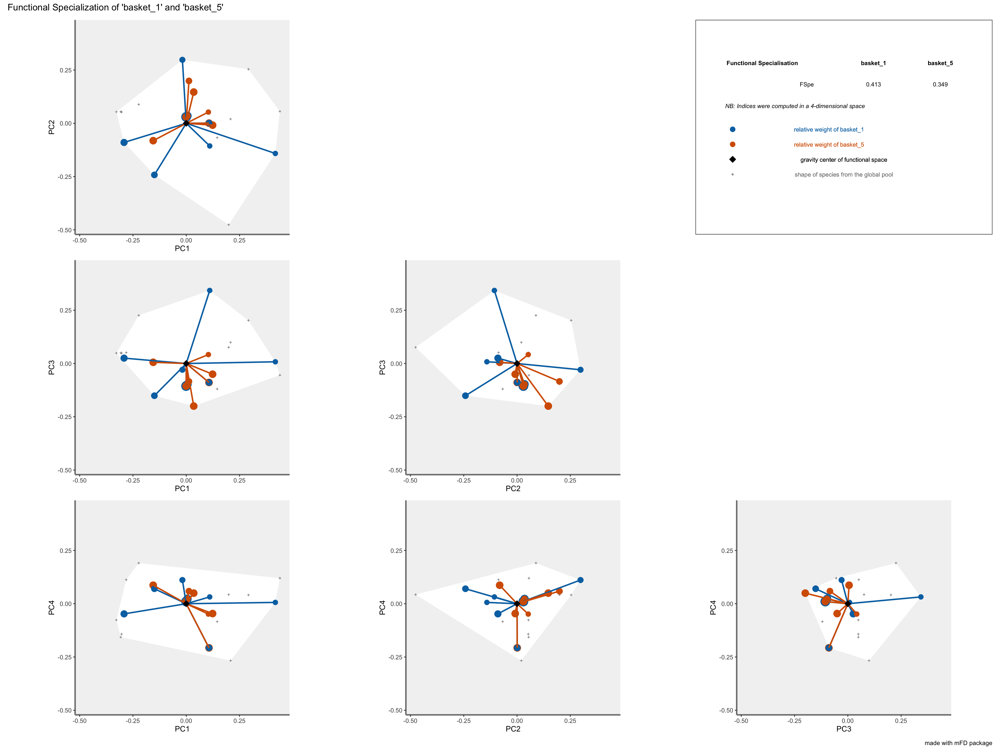
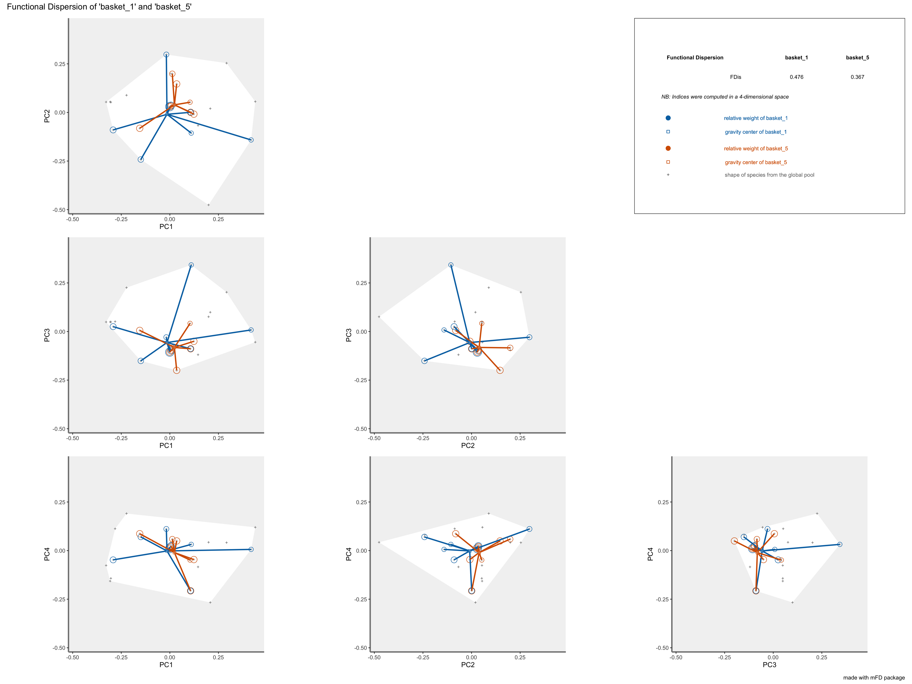
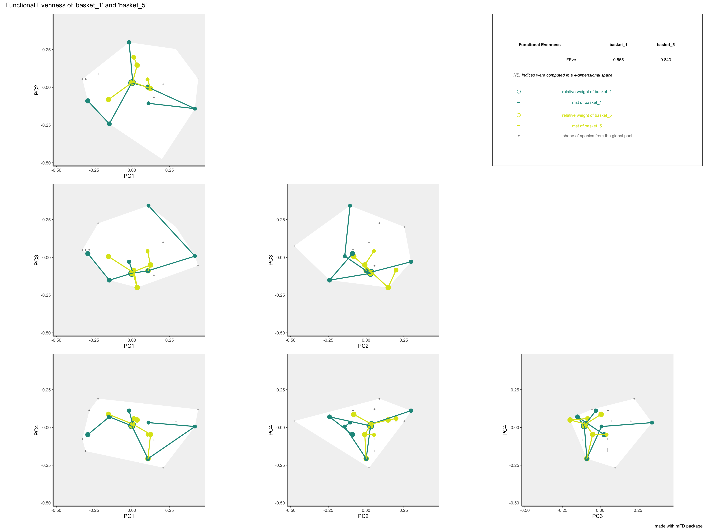
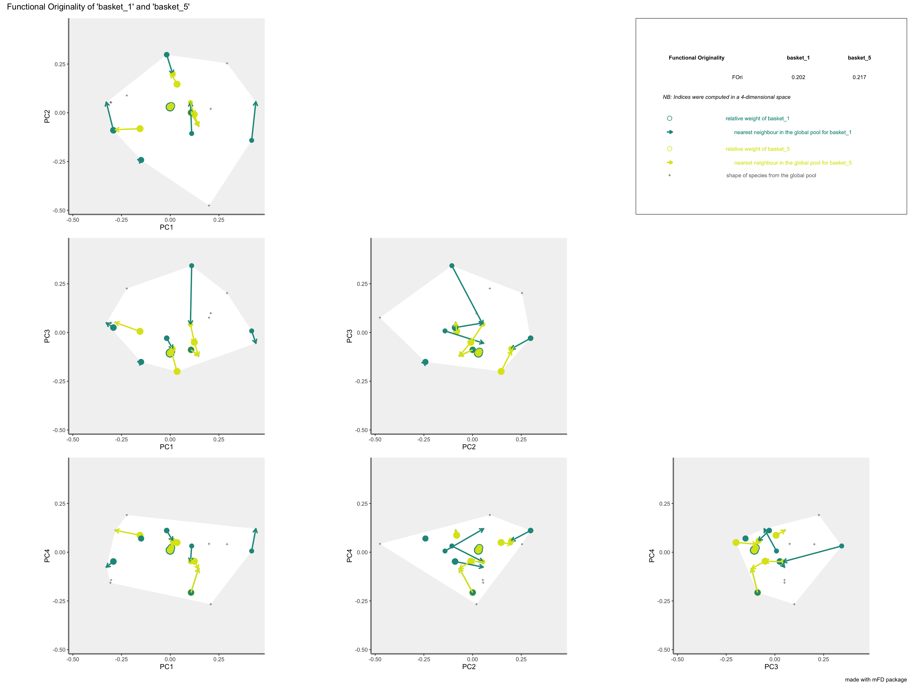
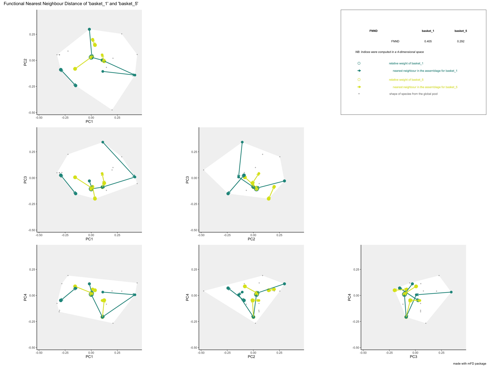

About
This tutorial describes the basic workflow showing how to compute step by step functional diversity (FD) indices in a multidimensional space. It is divided in four parts:
- Computing trait-based distances and the multidimensional functional space
- Using the
mFDpackage to compute FD alpha and beta indices and plot them (Magneville et al. 2021) - Using the
funrarpackage to compute Functional Rarity indices (Violle et al. 2017) - Using the
funbiogeopackage to compute analyses in functional biogeography (Violle et al. 2014)
N.B. You can chose to do Part 2, Part 3 and Part 4 in the order that you want but Part 1 has to be realized first.
Prerequisites
Be sure you have followed the instructions to set up your system (e.g.R version >= 3.5).
If not already done, please install the following R packages:
## CRAN packages ----
pkgs <- c("funrar", "mFD", "remotes", "sf", "terra")
install.packages(pkgs)
## GitHub packages ----
remotes::install_github("frbcesab/funbiogeo")
Data description
The dataset used as study case all along this workshop is the Fruits dataset based on ... types of fruits (i.e.species) distributed in 10 fruits baskets (i.e.assemblages). Each fruit is characterized by ... traits values summarized in the following table:
| Trait name | Trait measurement | Trait type | Number of classes | Classes code | Unit |
|---|---|---|---|---|---|
| Size | Maximal diameter | Ordinal | 5 | 0-1 ; 1-3 ; 3-5 ; 5-10 ; 10-20 | cm |
| Plant | Growth form | Categorical | 4 | tree ; shrub ; vine ; forb | NA |
| Climate | Climatic niche | Ordinal | 3 | temperate ; subtropical ; tropical | NA |
| Seed | Seed type | Ordinal | 3 | none ; pip ; pit | NA |
| Sugar | Sugar | Continuous | NA | NA | g/kg |
The use of the mFD and funrar packages is based on two datasets:
- a data frame summarizing traits values for each species called
fruits_traitsin this tutorial
# Load data:
data("fruits_traits", package = "mFD")
# Remove fuzzy traits in this tutorial:
fruits_traits <- fruits_traits[ , -c(6:8)]
# Display the table:
knitr::kable(head(fruits_traits),
caption = "Species x traits data frame")
| Size | Plant | Climate | Seed | Sugar | |
|---|---|---|---|---|---|
| apple | 5-10cm | tree | temperate | pip | 103.9 |
| apricot | 3-5cm | tree | temperate | pit | 92.4 |
| banana | 10-20cm | tree | tropical | none | 122.3 |
| currant | 0-1cm | shrub | temperate | pip | 73.7 |
| blackberry | 1-3cm | shrub | temperate | pip | 48.8 |
| blueberry | 0-1cm | forb | temperate | pip | 100.0 |
- a matrix summarizing species assemblages called
baskets_fruits_weightsin this tutorial. Weights in this matrix can be occurrence data, abundance, biomass, coverage, etc. The studied example works with biomass (i.e. grams of a fruit in a basket) and this matrix looks as follows:
# Load data:
data("baskets_fruits_weights", package = "mFD")
# Display the table:
knitr::kable(as.data.frame(baskets_fruits_weights[1:6, 1:6]),
centering = TRUE,
caption = "Species x assemblages matrix based on the **fruits** dataset")
| apple | apricot | banana | currant | blackberry | blueberry | |
|---|---|---|---|---|---|---|
| basket_1 | 400 | 0 | 100 | 0 | 0 | 0 |
| basket_2 | 200 | 0 | 400 | 0 | 0 | 0 |
| basket_3 | 200 | 0 | 500 | 0 | 0 | 0 |
| basket_4 | 300 | 0 | 0 | 0 | 0 | 0 |
| basket_5 | 200 | 0 | 0 | 0 | 0 | 0 |
| basket_6 | 100 | 0 | 200 | 0 | 0 | 0 |
Questions
Using this Practice, we ask the following questions:
- How different are the fruits baskets based on their functional traits?
- Question functional rarity
- Question funbiogeo
To answer these three questions, the first step is to build a functional space based on species traits on which functional diversity and functional rarity indices will be then computed.
Part 1 - Build a functional space using the mFD package
1.0 Compute summaries about your data
This part is not developped in this Practice (not enough time to see everything ;) ), but it could be useful to knwo that the mFDpackage can compute summaries about your traits or assemblage data. For instance, you can compute a matrix of species occurrence in each assemblage (needed in Part 2.2):
# Summary of the assemblages * species dataframe:
asb_sp_fruits_summ <- mFD::asb.sp.summary(asb_sp_w = baskets_fruits_weights)
asb_sp_fruits_occ <- asb_sp_fruits_summ$"asb_sp_occ"
head(asb_sp_fruits_occ)
apple apricot banana currant blackberry blueberry cherry
basket_1 1 0 1 0 0 0 1
basket_2 1 0 1 0 0 0 1
basket_3 1 0 1 0 0 0 1
basket_4 1 0 0 0 0 0 0
basket_5 1 0 0 0 0 0 0
basket_6 1 0 1 0 0 0 0
grape grapefruit kiwifruit lemon lime litchi mango melon
basket_1 0 0 0 1 0 0 0 1
basket_2 0 0 0 1 0 0 0 1
basket_3 0 0 0 1 0 0 0 1
basket_4 0 0 1 1 0 0 0 0
basket_5 0 0 1 1 0 0 0 0
basket_6 0 0 0 0 1 1 1 0
orange passion_fruit peach pear pineapple plum raspberry
basket_1 0 1 0 1 0 0 0
basket_2 0 1 0 1 0 0 0
basket_3 0 1 0 1 0 0 0
basket_4 1 0 1 1 0 1 0
basket_5 1 0 1 1 0 1 0
basket_6 1 0 0 0 1 0 0
strawberry tangerine water_melon
basket_1 1 0 0
basket_2 1 0 0
basket_3 1 0 0
basket_4 0 1 0
basket_5 0 1 0
basket_6 0 0 11.1 - What about the traits?
The first thing to do before starting analyses is to know your data. To do so, you must be able to characterize the traits you are using (i.e. tell the package what type of traits you are using). That is why mFD package needs a data frame summarizing the type of each trait (i.e. each column of the fruits_traits data frame).
# Load data:
data("fruits_traits_cat", package = "mFD")
# Remove fuzzy traits in this tutorial:
fruits_traits_cat <- fruits_traits_cat[-c(6:8), ]
# Thus remove the "fuzzy_name" column:
fruits_traits_cat <- fruits_traits_cat[ , -3]
# Display the table:
knitr::kable(head(fruits_traits_cat),
caption = "Traits types based on **fruits & baskets** dataset")
| trait_name | trait_type |
|---|---|
| Size | O |
| Plant | N |
| Climate | O |
| Seed | O |
| Sugar | Q |
The first column contains traits name. The second column contains traits type following this code:
- N: nominal trait (factor variable)
- O: ordinal traits (ordered variable)
- C: circular traits (integer values) (NB circular traits can not be used in
mFDfunction used to compute functional distance but ok for summary function and function to group species into Functional Entities) - Q: quantitative traits (numeric values)
- F: fuzzy traits (described with several values defined in several columns in the
fruits_traitsdata frame)
1.2 - Computing distances between species based on functional traits
The next step toward the computation of functional diversity indices is to estimate functional traits-based distances between species in order to build the functional space in which indices will be computed.
To compute trait-based distances, we will use the mFD::funct.dist() function which includes the following arguments:
sp_dist_fruits <- mFD::funct.dist(
sp_tr = fruits_traits,
tr_cat = fruits_traits_cat,
metric = "gower",
scale_euclid = "scale_center",
ordinal_var = "classic",
weight_type = "equal",
stop_if_NA = TRUE)
sp_tris the species x trait data frametr_catis the data frame summarizing trait type for each traitmetricis a character string referring to the metric used to compute distances. Two metrics are available and the choice depends on your traits data:if all traits are continuous use the Euclidean distance (
metric = "euclidean") and check the Compute Functional Diversity Indices based on Only Continuous Traits tutorial which explains how to build a multidimensional space from traits through PCA analysis or considering directly each trait as a dimension.if you have non-continuous traits use the Gower distance (
metric = "gower") as this method allows traits weighting. This method can also deal with fuzzy traits.
scale_euclidis a character string referring to the way the user wants to scale euclidean traits. You can either chose to scale by rangerange, use the center transformationcenter, use the scale transformationscale, use the scale-center transformationscale_centeror you can chose not to scalenoscale.ordinal_varis a character string specifying the method to be used for ordinal variables (i.e. ordered). You can either chose to treat ordinal variables as continuous variables (with"classic"option) or to treat ordinal variables as ranks (withmetricorpodanioptions, seemFD::funct.dist()help file for details).weight_typeis a character string referring to the type of method to weight traits. You can either chose to define weights using thetr_catdataframe (cf step 1.1) (useroption) or you can chose to give the same weight to all traits (equaloption). (NB UsingmFD, you can not define weights for fuzzy traits, usegawdispackage instead)stop_if_NAis a logical value to stop or not the process if thesp_trdata frame contains NA. If thesp_trdata frame containsNAyou can either chose to compute anyway functional distances (but keep in mind that Functional measures are sensitive to missing traits!) or you can delete species with missing or extrapolate missing traits (see Johnson et al. (2020)).
This function returns a dist object with traits-based distances between all pairs of species:
round(sp_dist_fruits, 3) # Output of the function mFD::funct.dist()
apple apricot banana currant blackberry blueberry
apricot 0.166
banana 0.375 0.541
currant 0.391 0.426 0.767
blackberry 0.376 0.410 0.751 0.084
blueberry 0.355 0.410 0.731 0.236 0.320
cherry 0.233 0.099 0.558 0.425 0.409 0.389
grape 0.380 0.446 0.705 0.372 0.356 0.336
grapefruit 0.192 0.327 0.268 0.501 0.483 0.537
kiwifruit 0.219 0.353 0.595 0.372 0.356 0.364
lemon 0.208 0.343 0.384 0.517 0.433 0.553
lime 0.370 0.404 0.345 0.578 0.494 0.614
litchi 0.466 0.332 0.391 0.658 0.642 0.622
mango 0.395 0.361 0.220 0.786 0.771 0.750
melon 0.285 0.419 0.560 0.407 0.391 0.229
orange 0.117 0.251 0.292 0.474 0.459 0.462
passion_fruit 0.461 0.527 0.414 0.553 0.537 0.516
peach 0.127 0.062 0.503 0.464 0.448 0.472
pear 0.009 0.157 0.384 0.383 0.367 0.353
pineapple 0.557 0.708 0.233 0.734 0.718 0.502
plum 0.156 0.009 0.532 0.435 0.419 0.401
raspberry 0.382 0.416 0.758 0.091 0.007 0.327
strawberry 0.376 0.410 0.751 0.284 0.200 0.120
tangerine 0.153 0.218 0.323 0.444 0.428 0.408
water_melon 0.281 0.415 0.556 0.410 0.395 0.226
cherry grape grapefruit kiwifruit lemon lime litchi
apricot
banana
currant
blackberry
blueberry
cherry
grape 0.347
grapefruit 0.426 0.573
kiwifruit 0.453 0.200 0.373
lemon 0.442 0.589 0.116 0.389
lime 0.503 0.650 0.277 0.550 0.161
litchi 0.233 0.514 0.459 0.686 0.475 0.336
mango 0.362 0.686 0.287 0.614 0.403 0.364 0.172
melon 0.518 0.465 0.308 0.266 0.424 0.585 0.751
orange 0.351 0.498 0.075 0.302 0.091 0.252 0.384
passion_fruit 0.572 0.319 0.453 0.280 0.470 0.331 0.405
peach 0.161 0.508 0.265 0.308 0.281 0.442 0.394
pear 0.242 0.389 0.184 0.210 0.200 0.361 0.475
pineapple 0.791 0.738 0.435 0.562 0.551 0.512 0.624
plum 0.090 0.437 0.336 0.363 0.352 0.413 0.323
raspberry 0.416 0.363 0.490 0.363 0.426 0.487 0.649
strawberry 0.409 0.356 0.483 0.356 0.433 0.494 0.642
tangerine 0.281 0.428 0.145 0.372 0.161 0.222 0.314
water_melon 0.515 0.462 0.311 0.262 0.427 0.588 0.748
mango melon orange passion_fruit peach pear pineapple
apricot
banana
currant
blackberry
blueberry
cherry
grape
grapefruit
kiwifruit
lemon
lime
litchi
mango
melon 0.580
orange 0.312 0.368
passion_fruit 0.434 0.546 0.378
peach 0.322 0.357 0.210 0.589
pear 0.404 0.276 0.108 0.470 0.119
pineapple 0.452 0.327 0.460 0.419 0.670 0.551
plum 0.351 0.428 0.261 0.518 0.071 0.152 0.701
raspberry 0.777 0.398 0.465 0.543 0.455 0.373 0.725
strawberry 0.770 0.191 0.458 0.537 0.448 0.367 0.518
tangerine 0.342 0.437 0.070 0.309 0.280 0.161 0.510
water_melon 0.576 0.004 0.364 0.542 0.354 0.272 0.324
plum raspberry strawberry tangerine
apricot
banana
currant
blackberry
blueberry
cherry
grape
grapefruit
kiwifruit
lemon
lime
litchi
mango
melon
orange
passion_fruit
peach
pear
pineapple
plum
raspberry 0.426
strawberry 0.419 0.207
tangerine 0.209 0.435 0.428
water_melon 0.425 0.401 0.194 0.4341.3 - Building functional spaces and chosing the best one
1.3.1 - Computing several multimensional functional spaces and assessing their quality
In order to generate a multidimensional space in which functional diversity indices are computed (Mouillot et al. 2013, we will perform a PCoA using the trait-based distances (and if required a functional dendrogram). mFD evaluates the quality of PCoA-based multidimensional spaces according to the deviation between trait-based distances and distances in the functional space (extension of Maire et al. (2015) framework). For that, we will use the mFD::quality.fspaces() function:
fspaces_quality_fruits <- mFD::quality.fspaces(
sp_dist = sp_dist_fruits,
maxdim_pcoa = 10,
deviation_weighting = "absolute",
fdist_scaling = FALSE,
fdendro = "average")
sp_distis thedistobject with pairwise trait-based distance between species as computed in step 3maxdim_pcoais the maximum number of PCoA axes to consider to build multidimensional spaces. Actually, the maximum number of dimensions considered depends on the number of PCoA axes with positive eigenvalues.deviation_weightingrefers to the method(s) used to weight the difference between species pairwise distances in the functional space and trait-based distances. You can chose between:absolute: absolute differences are used to compute the mean absolute deviation (mad) . It reflects the actual magnitude of errors that will affect FD metrics.squared: squared differences are used to compute the root of mean square deviation (rmsd). This weighting puts more weight to the large deviations between trait-based distances and distances in the functional space. misplaced in the functional space.- Both quality metrics can be used with
deviation_weighting = c("absolute", "squared").
fdist_scalingspecifies whether distances in the functional space should be scaled before computing differences with trait-based distances. Scaling ensures that trait-based distances and distances in the functional space have the same maximum. Scaling distances implies that the quality of the functional space accounts for congruence in distances rather than their equality.
NOTE The combination of deviation_weighting and fdist_scaling arguments leads to four possible quality metrics: mad, rmsd, mad_scaled and rmsd_scaled
fdendrospecifies the clustering algorithm to compute a functional dendrogram.NULLmeans no dendrogram computed. The chosen algorithm must be one of the method recognized by thestats::hclust()function from thestatspackage.
This function returns a list various objects:
- a data frame gathering for each space (in rows), values of quality metric(s) (in columns)
round(fspaces_quality_fruits$"quality_fspaces", 3) # Quality metrics of spaces
mad
pcoa_1d 0.150
pcoa_2d 0.073
pcoa_3d 0.047
pcoa_4d 0.040
pcoa_5d 0.049
pcoa_6d 0.055
pcoa_7d 0.060
pcoa_8d 0.064
pcoa_9d 0.065
pcoa_10d 0.065
tree_average 0.082- lists with details required for other tasks in step 4 to plot functional space quality and in step 5 to plot functional space.
NOTE The space with the best quality has the lowest quality metric. Here, thanks to mad values, we can see that the 4D space is the best one. That is why the following of this Practice will use this multidimensional space.
1.3.2 - Illustrating the quality of the functional spaces
With the mFD package, it is possible to illustrate the quality of PCoA-based multidimensional spaces according to deviation between trait-based distances and distances in the functional space. For that, we use the mFD::quality.fspace.plot() function with the following arguments:
mFD::quality.fspaces.plot(
fspaces_quality = fspaces_quality_fruits,
quality_metric = "mad",
fspaces_plot = c("tree_average", "pcoa_2d", "pcoa_3d",
"pcoa_4d", "pcoa_5d", "pcoa_6d"),
name_file = NULL,
range_dist = NULL,
range_dev = NULL,
range_qdev = NULL,
gradient_deviation = c(neg = "darkblue", nul = "grey80", pos = "darkred"),
gradient_deviation_quality = c(low = "yellow", high = "red"),
x_lab = "Trait-based distance")
fspaces_qualityis the output of themFD::quality.fspaces()function (step 4.1).quality_metricrefers to the quality metric used. It should be one of the column name(s) of the table gathering quality metric values (output ofmFD::quality.fspaces()calledquality_fspaces) (here:fspaces_quality_fruits$quality_fspaces) Thus it can be:mad,rmsd,mad_scaledorrmsd_scaled(see step 4.1)fspaces_plotrefers to the names of spaces for which quality has to be illustrated (up to 10). Names are those used in the output ofmFD::quality.fspaces()function showing the values of the quality metric.name_filerefers to the name of file to save (without extension) if the user wants to save the figure. If the user only wants the plot to be displayed, thenname_file = NULL.range_dist,range_dev,range_qdevare arguments to set ranges of panel axes (check function help for further information).gradient_deviationandgradient_deviation_qualityare arguments to set points colors (check function help for further information).xlabis a parameter to set x-axis label.
This function generates a figure with three panels (in rows) for each selected functional space (in columns). Each column represents a functional space, the value of the quality metric is written on the top of each column. The x-axis of all panels represents trait-based distances. The y-axis is different for each row:
- on the first (top) row, the y-axis represents species functional distances in the multidimensional space. Thus, the closer species are to the 1:1 line, the better distances in the functional space fit trait-based ones.
- on the second row, the y-axis shows the raw deviation of species distances in the functional space compared to trait-based distances. Thus, the raw deviation reflects the distance to the 1:1 line.
- on the third row, the y-axis shows the absolute or squared deviation of the (scaled) distance in the functional space. It is the deviation that is taken into account for computing the quality metric.
mFD::quality.fspaces.plot(
fspaces_quality = fspaces_quality_fruits,
quality_metric = "mad",
fspaces_plot = c("tree_average", "pcoa_2d", "pcoa_3d",
"pcoa_4d", "pcoa_5d", "pcoa_6d"),
name_file = NULL,
range_dist = NULL,
range_dev = NULL,
range_qdev = NULL,
gradient_deviation = c(neg = "darkblue", nul = "grey80", pos = "darkred"),
gradient_deviation_quality = c(low = "yellow", high = "red"),
x_lab = "Trait-based distance")

For the 2D space, on the top row there are a lot of points below the 1:1 lines, meaning that distances are overestimated in this multidimensional space. Looking at panels, we can see that the 4D space is the one in which points are the closest to the 1:1 line on the top row,and the closest to the x-axis for the two bottom rows, which reflects a better quality compared to other functional spaces / dendrogram. For the dendrogram, we can see on the top row that species pairs arrange in horizontal lines, meaning that different trait-based distances have then the same cophenetic distance on the dendrogram.
1.3.3 -Testing the correlation between functional axes and traits
mFD allows to test for correlations between traits and functional axes and then illustrate possible correlations (continuous traits = linear model is computed and r2 and associated p-value are returned ; non-continuous traits = Kruskal-Wallis test is computed and eta2 statistic is returned). The function mFD::traits.faxes.cor() allows to test and plot correlation and needs the following arguments:
sp_tris the species x traits data framesp_faxes_coordis a matrix of species coordinates taken from the outputs of themFD::quality.fspaces()function with columns representing axes on which functional space must be computed. For instance, in this tutorial, we will plot the functional space for 4 and 10 dimensions (cf. the two examples below). The wholesp_faxes_coordcan be retrieved through the output of themFD::quality.fspaces()function:
sp_faxes_coord_fruits <- fspaces_quality_fruits$"details_fspaces"$"sp_pc_coord"
plotis a logical value indicating whether correlations should be illustrated or not. If this option is set toTRUE, traits-axis relationships are plotted through scatterplot for continuous traits and boxplot for non-continuous traits.
mFD::traits.faxes.cor works as follows:
fruits_tr_faxes <- mFD::traits.faxes.cor(
sp_tr = fruits_traits,
sp_faxes_coord = sp_faxes_coord_fruits[ , c("PC1", "PC2", "PC3", "PC4")],
plot = TRUE)
We can print only traits with significant effect on position along one of the axis and look at the plots:
Code# Print traits with significant effect:
fruits_tr_faxes$"tr_faxes_stat"[which(fruits_tr_faxes$"tr_faxes_stat"$"p.value" < 0.05), ]
trait axis test stat value p.value
1 Size PC1 Kruskal-Wallis eta2 0.308 0.0377
3 Size PC3 Kruskal-Wallis eta2 0.326 0.0325
5 Plant PC1 Kruskal-Wallis eta2 0.471 0.0049
6 Plant PC2 Kruskal-Wallis eta2 0.382 0.0116
8 Plant PC4 Kruskal-Wallis eta2 0.264 0.0360
9 Climate PC1 Kruskal-Wallis eta2 0.731 0.0001
13 Seed PC1 Kruskal-Wallis eta2 0.201 0.0402
14 Seed PC2 Kruskal-Wallis eta2 0.593 0.0005
20 Sugar PC4 Linear Model r2 0.682 0.0000# Return plots:
fruits_tr_faxes$"tr_faxes_plot"

We can thus see that PC1 is mostly driven by Climate (temperate on the left and tropical on the right) and Plant Type (forb & shrub on the left vs tree & vine on the right) and Size (large fruits on the right) with weaker influence of Seed (eta2 < 0.25). Then, PC2 is mostly driven by Seed (no seed on the left and pit seed on the right) with weaker influence of Plant Type. PC3 is driven by only one trait, Size. And finally PC4 is mostly driven by Sugar (high sugar content on the right and low sugar content on the left) with a weaker influence of Plant Type.
1.4 - Plotting the selected functional space and position of species
Once the user has selected the dimensionality of the functional space, mFD allows you to plot the given multidimensional functional space and the position of species in all 2-dimensions spaces made by pairs of axes.
The mFD::funct.space.plot() function allows to illustrate the position of all species along pairs of space axes.
This function allows to plot with many possibilities to change colors/shapes of each plotted element. Here are listed the main arguments:
sp_faxes_coordis a matrix of species coordinates taken from the outputs of themFD::quality.fspaces()function with columns representing axes on which functional space must be computed. For instance, in this tutorial, we will plot the functional space for 4 and 10 dimensions (cf. the two examples below). The wholesp_faxes_coordcan be retrieved through the output of themFD::quality.fspaces()function:
sp_faxes_coord_fruits <- fspaces_quality_fruits$"details_fspaces"$"sp_pc_coord"
faxesis a vector containing names of axes to plot. If set toNULL, the first four functional axes will be plotted.faxes_nmis a vector containing labels offaxes(following faxes vector rank). IfNULL, labels followfaxesvector names.range_faxesis a vector to complete if the user wants to set specific limits for functional axes. Ifrange_faxes = c(NA, NA), the range is computed according to the range of values among all axes.plot_chis a logical value used to draw or not the 2D convex-hull filled by the global pool of species. Color, fill and opacity of the convex hull can be chosen through other inputs , please refer to the functions help.plot_sp_nmis a vector containing species names to plot. IfNULL, no species names plotted. Name size, color and font can be chosen through other inputs, please refer to the functions help.plot_verticesis a logical value used to plot or not vertices with a different shape than other species. Be careful: these representations are 2D representations, thus vertices of the convex-hull in the n-multidimensional space can be close to the center of the hull projected in 2D. Color, fill, shape and size of vertices can be chosen through other inputs, please refer to the functions help.color_bgis a R color or an hexadecimal color code referring to the color of the background of the plot.other inputs are used to chose color, fill, size, and shape of species from the global pool, please refer to the functions help.
check_inputis a recurrent argument in themFDpackage. It defines whether inputs should be checked before computation or not. Possible error messages will thus be more understandable for the user than R error messages (Recommendation: set it asTRUE).
Here are the plots for the fruits & baskets dataset for the first four PCoA axis:
big_plot <- mFD::funct.space.plot(
sp_faxes_coord = sp_faxes_coord_fruits[ , c("PC1", "PC2", "PC3", "PC4")],
faxes = c("PC1", "PC2", "PC3", "PC4"),
name_file = NULL,
faxes_nm = NULL,
range_faxes = c(NA, NA),
color_bg = "grey95",
color_pool = "darkgreen",
fill_pool = "white",
shape_pool = 21,
size_pool = 1,
plot_ch = TRUE,
color_ch = "black",
fill_ch = "white",
alpha_ch = 0.5,
plot_vertices = TRUE,
color_vert = "blueviolet",
fill_vert = "blueviolet",
shape_vert = 23,
size_vert = 1,
plot_sp_nm = NULL,
nm_size = 3,
nm_color = "black",
nm_fontface = "plain",
check_input = TRUE)
big_plot$patchwork
Here, the convex-hull of the species pool is plotted in white and axis have the same range to get rid of bias based on different axis scales. Species being vertices of the 4D convex hull are in purple.
Part 2 - Computing and plotting FD indices using the mFD package
The mFD::alpha.fd.multidim() function allows computing alpha and beta FD indices.
2.1 - Computing and plotting alpha FD indices
Using the alpha.fd.multidim() function, you can compute up to nine alpha FD indices:
FDisFunctional Dispersion: the biomass weighted deviation of species traits values from the center of the functional space filled by the assemblage i.e. the biomass-weighted mean distance to the biomass-weighted mean trait values of the assemblage.FRicFunctional Richness: the proportion of functional space filled by species of the studied assemblage, i.e. the volume inside the convex-hull shaping species. To computeFRicthe number of species must be at least higher than the number of functional axis + 1.FDivFunctional Divergence: the proportion of the biomass supported by the species with the most extreme functional traits i.e. the ones located close to the edge of the convex-hull filled by the assemblage.FEveFunctional Evenness: the regularity of biomass distribution in the functional space using the Minimum Spanning Tree linking all species present in the assemblage.FSpeFunctional Specialization: the biomass weighted mean distance to the mean position of species from the global pool (present in all assemblages).FMPDFunctional Mean Pairwise Distance: the mean weighted distance between all species pairs.FNNDFunctional Mean Nearest Neighbour Distance: the weighted distance to the nearest neighbor within the assemblage.FIdeFunctional Identity: the mean traits values for the assemblage.FIdeis always computed whenFDisis computed.FOriFunctional Originality: the weighted mean distance to the nearest species from the global species pool.
The function is used as follow:
Codealpha_fd_indices_fruits <- mFD::alpha.fd.multidim(
sp_faxes_coord = sp_faxes_coord_fruits[ , c("PC1", "PC2", "PC3", "PC4")],
asb_sp_w = baskets_fruits_weights,
ind_vect = c("fdis", "fmpd", "fnnd", "feve", "fric", "fdiv", "fori",
"fspe", "fide"),
scaling = TRUE,
check_input = TRUE,
details_returned = TRUE)
The arguments and their use are listed below:
sp_faxes_coordis the species coordinates matrix. This dataframe gathers only axis of the functional space you have chosen based on step 4.asb_sp_wis the matrix linking species and assemblages they belong to (summarized in step 1).ind_vectis a vector with names of diversity functional indices to compute.scalingis a logical value indicating whether indices should be scaled between 0 and 1. If scaling is to be done, this argument must be set toTRUE.check_inputis a recurrent argument in themFDpackage. It defines whether inputs should be checked before computation or not. Possible error messages will thus be more understandable for the user than R error messages (Recommendation: set it asTRUE).details_returnedis used if the user wants to store information that are used in graphical functions. If the user wants to plot FD indices, thendetails_returnedmust be set toTRUE.
NB Use lowercase letters to enter FD indices names
The function has two main outputs:
- a data frame gathering indices values in each assemblage (for
FIdevalues, there are as many columns as there are axes to the studied functional space).
fd_ind_values_fruits <- alpha_fd_indices_fruits$"functional_diversity_indices"
fd_ind_values_fruits
sp_richn fdis fmpd fnnd feve fric
basket_1 8 0.4763773 0.6255537 0.4050890 0.565326 0.162830681
basket_2 8 0.7207823 0.7204459 0.6604092 0.754999 0.162830681
basket_3 8 0.7416008 0.7274367 0.6748312 0.805534 0.162830681
basket_4 8 0.2958614 0.3426258 0.2258304 0.759802 0.007880372
basket_5 8 0.3673992 0.3782650 0.2922436 0.843120 0.007880372
basket_6 8 0.8001980 0.7838356 0.7295674 0.814829 0.147936148
basket_7 8 0.8121314 0.8092985 0.7566157 0.827061 0.147936148
basket_8 8 0.4678159 0.5182996 0.3618776 0.566161 0.036480112
basket_9 8 0.5577452 0.5566262 0.4563761 0.675735 0.036480112
basket_10 8 0.5505783 0.5501381 0.4118548 0.660085 0.025774304
fdiv fori fspe fide_PC1 fide_PC2
basket_1 0.5514453 0.2024008 0.4127138 -0.01473662 -0.009461738
basket_2 0.8064809 0.2788762 0.5781232 0.01887361 -0.061601373
basket_3 0.8089535 0.3067367 0.5888104 0.04724418 -0.056571400
basket_4 0.6080409 0.1766279 0.3106937 0.03994897 0.052581211
basket_5 0.7288912 0.2165945 0.3488358 0.02349573 0.039069220
basket_6 0.8937934 0.6071369 0.7930809 0.24320913 -0.114434642
basket_7 0.8989094 0.4841824 0.7443406 0.13341179 -0.183609095
basket_8 0.7113688 0.2538185 0.6363814 -0.24497368 0.036194656
basket_9 0.7787237 0.3126927 0.6309078 -0.21021559 0.029339706
basket_10 0.7741681 0.1799705 0.4587432 -0.05375867 -0.005743348
fide_PC3 fide_PC4
basket_1 -0.05670043 -0.001823969
basket_2 -0.04427402 0.021249327
basket_3 -0.03631846 0.018045257
basket_4 -0.08413271 -0.001343112
basket_5 -0.08187248 -0.010262902
basket_6 0.01394977 0.025500282
basket_7 -0.01782549 0.021494300
basket_8 0.04748935 -0.038827673
basket_9 0.05516746 -0.041392184
basket_10 -0.05649324 0.041191011- a details list of data frames and sublists gathering information such as coordinates of centroids, distances and identity of the nearest neighbour, distances to the centroid, etc. The user does not have to directly use it but it will be useful if FD indices are then plotted. It can be retrieved through:
details_list_fruits <- alpha_fd_indices_fruits$"details"
Then, you can plot functional indices using the mFD::alpha.multidim.plot() for up to two assemblages:
plots_alpha <- mFD::alpha.multidim.plot(
output_alpha_fd_multidim = alpha_fd_indices_fruits,
plot_asb_nm = c("basket_1", "basket_5"),
ind_nm = c("fdis", "fide", "fnnd", "feve", "fric",
"fdiv", "fori", "fspe"),
faxes = NULL,
faxes_nm = NULL,
range_faxes = c(NA, NA),
color_bg = "grey95",
shape_sp = c(pool = 3, asb1 = 21, asb2 = 21),
size_sp = c(pool = 0.7, asb1 = 1, asb2 = 1),
color_sp = c(pool = "grey50", asb1 = "#1F968BFF", asb2 = "#DCE319FF"),
color_vert = c(pool = "grey50", asb1 = "#1F968BFF", asb2 = "#DCE319FF"),
fill_sp = c(pool = NA, asb1 = "#1F968BFF", asb2 = "#DCE319FF"),
fill_vert = c(pool = NA, asb1 = "#1F968BFF", asb2 = "#DCE319FF"),
color_ch = c(pool = NA, asb1 = "#1F968BFF", asb2 = "#DCE319FF"),
fill_ch = c(pool = "white", asb1 = "#1F968BFF", asb2 = "#DCE319FF"),
alpha_ch = c(pool = 1, asb1 = 0.3, asb2 = 0.3),
shape_centroid_fdis = c(asb1 = 22, asb2 = 24),
shape_centroid_fdiv = c(asb1 = 22, asb2 = 24),
shape_centroid_fspe = 23,
color_centroid_fspe = "black",
size_sp_nm = 3,
color_sp_nm = "black",
plot_sp_nm = NULL,
fontface_sp_nm = "plain",
save_file = FALSE,
check_input = TRUE)
As you can see, this function has a lot of arguments: most of them are graphical arguments allowing the user to chose colors, shapes, sizes, scales, etc. This tutorial only presents main arguments. To learn about the use of graphical arguments, check the function help file. The main arguments of this function are listed below:
output_alpha_fd_multidimis the output of the `mFD::alpha.fd.multidim()function.plot_asb_nmis a vector gathering name(s) of assemblage(s) to plot.ind_vectis a vector gathering FD indices to plot. Plots are available forFDis,FIde,FEve,FRic,FDiv,FOri,FSpe, andFNND.faxesis a vector containing names of axes to plot. You can only plot from two to four axes labels for graphical reasons.faxes_nmis a vector with axes labels if the user ants different axes labels thanfaxesones.range_faxesis a vector with minimum and maximum values for axes. Ifrange_faxes = c(NA, NA), the range is computed according to the range of values among all axes, all axes having thus the same range. To have a fair representation of species positions in all plots, all axes must have the same range.plot_sp_nmis a vector containing species names to plot. IfNULL, then no name is plotted.- size, color, fill, and shape arguments for each component of the graphs i.e. species of the global pool, species of the studied assemblage(s), vertices, centroids and segments. If you have to plot two assemblages, then inputs should be formatted as follow:
c(pool = ..., asb1 = ..., asb2 = ...)for inputs used for global pool and studied assemblages andc(asb1 = ..., asb2 = ...)for inputs used for studied assemblages only. check_inputis a recurrent argument inmFD. It defines whether inputs should be checked before computation or not. Possible error messages will thus be more understandable for the user than R error messages (Recommendation: set it asTRUE.
Then, using these arguments, here are the output plots for the fruits & baskets dataset:
FRicrepresentation: the colored shapes reflect the convex-hull of the studied assemblages and the white shape reflects the convex-hull of the global pool of species:
plots_alpha$"fric"$"patchwork"
FDivrepresentation: the gravity centers of vertices (i.e.species with the most extreme functional traits) of each assemblages are plotted as a square and a triangle. The two colored circles represent the mean distance of species to the gravity center for each assemblage. Species of each assemblage have different size given their relative weight into the assemblage.
plots_alpha$"fdiv"$"patchwork"
FSperepresentation: colored traits represent distances of each species from a given assemblage to the center of gravity of the global pool (i.e center of the functional space). the center of gravity is plotted with a purple diamond. Species of each assemblage have different size given their relative weight into the assemblage.
plots_alpha$"fspe"$"patchwork"

FDisrepresentation: colored traits represent distances of each species from a given assemblage to the center of gravity of species of the assemblage (defined by FIde values). The center of gravity of each assemblage is plotted using a square and a triangle. Species of each assemblage havedifferent size given their relative weight into the assemblage.
plots_alpha$"fdis"$"patchwork"

FIderepresentation:colored lines refer to the weighted average position of species of each assemblage along each axis. Species of each assemblage have different size given their relative weight into the assemblage.
plots_alpha$"fide"$"patchwork"
FEverepresentation: colored traits represent the Minimum Spanning Tree linking species of each assemblage. Species of each assemblage have different size given their relative weight into the assemblage.
plots_alpha$"feve"$"patchwork"

FOrirepresentation: colored arrows represent the distances of each species from each assemblage to the nearest species in the global species pool. Species of each assemblage have different size given their relative weight into the assemblage.
plots_alpha$"fori"$"patchwork"

FNNDrepresentation: colored arrows represent the distances of each species from each assemblage to the nearest species in the studied assemblage. Species of each assemblage have different size given their relative weight into the assemblage.
plots_alpha$"fnnd"$"patchwork"

Note Using the mFD package, you can plot more than two assemblages but not with the alpha.multidim.plot() function. There are several specific functions for each step of the plot: build the background of the plot (background.plot()), plot the pool of species you are working on (pool.plot()), plot species from the studied assemblages (species.plot()) function and lastly plot the wanted metric using related function (fric.plot(), fdiv.plot(), fide.plot(),fdis.plot(), feve.plot(), fnnd.plot(), fori.plot(), fspe.plot()). Plots for different axes combination can be gathered into a single plot using the panels.to.patchwork() function.
2.1 - Computing and plotting beta FD indices
Note: Some Mac OS X 10.15 may encounter some issues with the beta_*() functions.
mFD package allows you to compute beta diversity indices for each assemblage pairs following Villeger et al. 2013. For that we will use the mFD::beta.fd.multidim() function. This function can compute two families of functional beta diversity indices, either Jaccard or Sorensen.
In this example, we will use Jaccard index. For each assemblages pair, the dissimilarity index is decomposed into two additive components: turnover and nestedness-resultant.
NB The turnover component is the highest if there is no shared traits combination between the two assemblages. The nestedness component is the highest if one assemblage hosts a small subset of the functional strategies present in the other.
The mFD::beta.fd.multidim() function has the main following arguments:
beta_fd_indices_fruits <- mFD::beta.fd.multidim(
sp_faxes_coord = sp_faxes_coord_fruits[ , c("PC1", "PC2", "PC3", "PC4")],
asb_sp_occ = asb_sp_fruits_occ,
check_input = TRUE,
beta_family = c("Jaccard"),
details_returned = TRUE)
sp_faxes_coordis the species coordinates matrix. This dataframe gathers only axis of the functional space you have chosen based on step 4.asb_sp_occis the matrix of occurrence (coded as 0/1) of species assemblages (summarized in step 1).check_inputis a recurrent argument in themFDpackage. It defines whether inputs should be checked before computation or not. Possible error messages will thus be more understandable for the user than R error messages (Recommendation: set it asTRUE.beta_familya character string for the type of beta-diversity index to compute, it can either beJaccardorSorensen.details_returnedis a logical value indicating whether details of outputs must be stored. It should be stored if you plan to use the graphical function to illustrate beta diversity indices thereafter.There are also other arguments for parallelisation options. Check the function help file for more explanation.
The function returns a list containing:
- a dist object with beta indices values for each pair of assemblages:
head(beta_fd_indices_fruits$"pairasb_fbd_indices", 10)
$jac_diss
basket_1 basket_2 basket_3 basket_4
basket_2 0.000000e+00
basket_3 0.000000e+00 0.000000e+00
basket_4 9.654002e-01 9.654002e-01 9.654002e-01
basket_5 9.654002e-01 9.654002e-01 9.654002e-01 2.071138e-15
basket_6 8.701848e-01 8.701848e-01 8.701848e-01 9.972695e-01
basket_7 8.701848e-01 8.701848e-01 8.701848e-01 9.972695e-01
basket_8 9.797030e-01 9.797030e-01 9.797030e-01 1.000000e+00
basket_9 9.797030e-01 9.797030e-01 9.797030e-01 1.000000e+00
basket_10 9.151338e-01 9.151338e-01 9.151338e-01 9.303584e-01
basket_5 basket_6 basket_7 basket_8
basket_2
basket_3
basket_4
basket_5
basket_6 9.972695e-01
basket_7 9.972695e-01 0.000000e+00
basket_8 1.000000e+00 1.000000e+00 1.000000e+00
basket_9 1.000000e+00 1.000000e+00 1.000000e+00 0.000000e+00
basket_10 9.303584e-01 9.983508e-01 9.983508e-01 9.702788e-01
basket_9
basket_2
basket_3
basket_4
basket_5
basket_6
basket_7
basket_8
basket_9
basket_10 9.702788e-01
$jac_turn
basket_1 basket_2 basket_3 basket_4
basket_2 0.000000e+00
basket_3 0.000000e+00 0.000000e+00
basket_4 4.320333e-01 4.320333e-01 4.320333e-01
basket_5 4.320333e-01 4.320333e-01 4.320333e-01 2.071138e-15
basket_6 8.627528e-01 8.627528e-01 8.627528e-01 9.723344e-01
basket_7 8.627528e-01 8.627528e-01 8.627528e-01 9.723344e-01
basket_8 9.425331e-01 9.425331e-01 9.425331e-01 1.000000e+00
basket_9 9.425331e-01 9.425331e-01 9.425331e-01 1.000000e+00
basket_10 5.990146e-01 5.990146e-01 5.990146e-01 8.385233e-01
basket_5 basket_6 basket_7 basket_8
basket_2
basket_3
basket_4
basket_5
basket_6 9.723344e-01
basket_7 9.723344e-01 0.000000e+00
basket_8 1.000000e+00 1.000000e+00 1.000000e+00
basket_9 1.000000e+00 1.000000e+00 1.000000e+00 0.000000e+00
basket_10 8.385233e-01 9.944208e-01 9.944208e-01 9.638833e-01
basket_9
basket_2
basket_3
basket_4
basket_5
basket_6
basket_7
basket_8
basket_9
basket_10 9.638833e-01
$jac_nest
basket_1 basket_2 basket_3 basket_4 basket_5
basket_2 0.000000000
basket_3 0.000000000 0.000000000
basket_4 0.533366944 0.533366944 0.533366944
basket_5 0.533366944 0.533366944 0.533366944 0.000000000
basket_6 0.007431956 0.007431956 0.007431956 0.024935183 0.024935183
basket_7 0.007431956 0.007431956 0.007431956 0.024935183 0.024935183
basket_8 0.037169839 0.037169839 0.037169839 0.000000000 0.000000000
basket_9 0.037169839 0.037169839 0.037169839 0.000000000 0.000000000
basket_10 0.316119149 0.316119149 0.316119149 0.091835053 0.091835053
basket_6 basket_7 basket_8 basket_9
basket_2
basket_3
basket_4
basket_5
basket_6
basket_7 0.000000000
basket_8 0.000000000 0.000000000
basket_9 0.000000000 0.000000000 0.000000000
basket_10 0.003930032 0.003930032 0.006395544 0.006395544- a list containing details such as inputs, vertices of the global pool and of each assemblage and FRic values for each assemblage
beta_fd_indices_fruits$"details"
$inputs
$inputs$sp_faxes_coord
PC1 PC2 PC3 PC4
apple 0.0055715265 0.0350421604 -0.097471237 0.022402932
apricot 0.0051324906 0.1993950375 -0.095659935 0.041498534
banana 0.4180172546 -0.1414728845 0.008086992 0.006165812
currant -0.3278449659 0.0536374098 0.049052945 -0.076408888
blackberry -0.3034346496 0.0526909897 0.049135314 -0.142658171
blueberry -0.2815708070 -0.0866665191 0.051316336 0.112502412
cherry -0.0180809780 0.2978695529 -0.029313202 0.111166444
grape -0.2228504050 0.0885963887 0.225751135 0.190718259
grapefruit 0.1450603259 -0.0673074635 -0.119455606 -0.084037260
kiwifruit -0.1550698937 -0.0814958746 0.005740138 0.086787104
lemon 0.1067949113 0.0007714157 -0.088895714 -0.207026513
lime 0.2079695595 0.0199956576 0.099157708 -0.266782185
litchi 0.2917434196 0.2537533311 0.202206065 0.041136776
mango 0.4393412201 0.0559467870 -0.054626734 0.119804224
melon -0.1493941692 -0.2420723462 -0.151024241 0.070247222
orange 0.1236282949 -0.0086604744 -0.050235439 -0.046156784
passion_fruit 0.1101264243 -0.1062790540 0.342728218 0.031929461
peach 0.0351203321 0.1465415655 -0.199699124 0.049647666
pear -0.0005886084 0.0297927029 -0.105703762 0.010290065
pineapple 0.1991811945 -0.4756825960 0.075904777 0.042696533
plum 0.0126064681 0.1989177835 -0.084010036 0.058965350
raspberry -0.3070933066 0.0543878274 0.049178225 -0.156730076
strawberry -0.2917242495 -0.0898440618 0.025237344 -0.047647147
tangerine 0.1039035285 0.0526165085 0.041894666 -0.048619225
water_melon -0.1465449176 -0.2404738440 -0.149294834 0.080107453
$inputs$asb_sp_occ
apple apricot banana currant blackberry blueberry cherry
basket_1 1 0 1 0 0 0 1
basket_2 1 0 1 0 0 0 1
basket_3 1 0 1 0 0 0 1
basket_4 1 0 0 0 0 0 0
basket_5 1 0 0 0 0 0 0
basket_6 1 0 1 0 0 0 0
basket_7 1 0 1 0 0 0 0
basket_8 0 0 0 1 1 1 1
basket_9 0 0 0 1 1 1 1
basket_10 1 1 0 0 0 0 0
grape grapefruit kiwifruit lemon lime litchi mango melon
basket_1 0 0 0 1 0 0 0 1
basket_2 0 0 0 1 0 0 0 1
basket_3 0 0 0 1 0 0 0 1
basket_4 0 0 1 1 0 0 0 0
basket_5 0 0 1 1 0 0 0 0
basket_6 0 0 0 0 1 1 1 0
basket_7 0 0 0 0 1 1 1 0
basket_8 1 0 0 1 0 0 0 0
basket_9 1 0 0 1 0 0 0 0
basket_10 1 1 0 0 0 0 0 1
orange passion_fruit peach pear pineapple plum raspberry
basket_1 0 1 0 1 0 0 0
basket_2 0 1 0 1 0 0 0
basket_3 0 1 0 1 0 0 0
basket_4 1 0 1 1 0 1 0
basket_5 1 0 1 1 0 1 0
basket_6 1 0 0 0 1 0 0
basket_7 1 0 0 0 1 0 0
basket_8 0 0 0 0 0 0 1
basket_9 0 0 0 0 0 0 1
basket_10 0 0 0 1 0 1 0
strawberry tangerine water_melon
basket_1 1 0 0
basket_2 1 0 0
basket_3 1 0 0
basket_4 0 1 0
basket_5 0 1 0
basket_6 0 0 1
basket_7 0 0 1
basket_8 1 0 0
basket_9 1 0 0
basket_10 1 0 0
$pool_vertices
[1] "grape" "lemon" "water_melon" "banana"
[5] "raspberry" "cherry" "blueberry" "grapefruit"
[9] "melon" "strawberry" "peach" "apricot"
[13] "passion_fruit" "litchi" "lime" "pineapple"
[17] "mango" "currant"
$asb_FRic
basket_1 basket_2 basket_3 basket_4 basket_5
0.162830681 0.162830681 0.162830681 0.007880372 0.007880372
basket_6 basket_7 basket_8 basket_9 basket_10
0.147936148 0.147936148 0.036480112 0.036480112 0.025774304
$asb_vertices
$asb_vertices$basket_1
[1] "lemon" "melon" "pear" "apple"
[5] "passion_fruit" "cherry" "strawberry" "banana"
$asb_vertices$basket_2
[1] "lemon" "melon" "pear" "apple"
[5] "passion_fruit" "cherry" "strawberry" "banana"
$asb_vertices$basket_3
[1] "lemon" "melon" "pear" "apple"
[5] "passion_fruit" "cherry" "strawberry" "banana"
$asb_vertices$basket_4
[1] "peach" "lemon" "tangerine" "pear" "plum"
[6] "orange" "kiwifruit"
$asb_vertices$basket_5
[1] "peach" "lemon" "tangerine" "pear" "plum"
[6] "orange" "kiwifruit"
$asb_vertices$basket_6
[1] "litchi" "lime" "apple" "banana"
[5] "orange" "pineapple" "mango" "water_melon"
$asb_vertices$basket_7
[1] "litchi" "lime" "apple" "banana"
[5] "orange" "pineapple" "mango" "water_melon"
$asb_vertices$basket_8
[1] "strawberry" "blueberry" "raspberry" "cherry" "grape"
[6] "lemon" "currant"
$asb_vertices$basket_9
[1] "strawberry" "blueberry" "raspberry" "cherry" "grape"
[6] "lemon" "currant"
$asb_vertices$basket_10
[1] "grape" "melon" "plum" "apricot" "grapefruit"
[6] "strawberry"- a vector containing the
FRicvalue for each assemblage retrieved through thedetails_betalist:
beta_fd_indices_fruits$"details"$"asb_FRic"
basket_1 basket_2 basket_3 basket_4 basket_5
0.162830681 0.162830681 0.162830681 0.007880372 0.007880372
basket_6 basket_7 basket_8 basket_9 basket_10
0.147936148 0.147936148 0.036480112 0.036480112 0.025774304 - a list of vectors containing names of species being vertices of the convex hull for each assemblage retrieved through the
details_betalist:
beta_fd_indices_fruits$"details"$"asb_vertices"
$basket_1
[1] "lemon" "melon" "pear" "apple"
[5] "passion_fruit" "cherry" "strawberry" "banana"
$basket_2
[1] "lemon" "melon" "pear" "apple"
[5] "passion_fruit" "cherry" "strawberry" "banana"
$basket_3
[1] "lemon" "melon" "pear" "apple"
[5] "passion_fruit" "cherry" "strawberry" "banana"
$basket_4
[1] "peach" "lemon" "tangerine" "pear" "plum"
[6] "orange" "kiwifruit"
$basket_5
[1] "peach" "lemon" "tangerine" "pear" "plum"
[6] "orange" "kiwifruit"
$basket_6
[1] "litchi" "lime" "apple" "banana"
[5] "orange" "pineapple" "mango" "water_melon"
$basket_7
[1] "litchi" "lime" "apple" "banana"
[5] "orange" "pineapple" "mango" "water_melon"
$basket_8
[1] "strawberry" "blueberry" "raspberry" "cherry" "grape"
[6] "lemon" "currant"
$basket_9
[1] "strawberry" "blueberry" "raspberry" "cherry" "grape"
[6] "lemon" "currant"
$basket_10
[1] "grape" "melon" "plum" "apricot" "grapefruit"
[6] "strawberry"Then, the package allows the user to illustrate functional beta-diversity indices for a pair of assemblages in a multidimensional space using the mFD::beta.multidim.plot() function. The output of this function is a figure showing the overlap between convex hulls shaping each of the two species assemblages.
The plotting function has a large number of arguments, allowing the user to chose graphical options. Arguments are listed below:
Codebeta_plot_fruits <- mFD::beta.multidim.plot(
output_beta_fd_multidim = beta_fd_indices_fruits,
plot_asb_nm = c("basket_1", "basket_4"),
beta_family = c("Jaccard"),
plot_sp_nm = c("apple", "lemon", "pear"),
faxes = paste0("PC", 1:4),
name_file = NULL,
faxes_nm = NULL,
range_faxes = c(NA, NA),
color_bg = "grey95",
shape_sp = c("pool" = 3.0, asb1 = 22, asb2 = 21),
size_sp = c("pool" = 0.8, asb1 = 1, asb2 = 1),
color_sp = c("pool" = "grey50", asb1 = "blue", asb2 = "red"),
fill_sp = c("pool" = NA, asb1 = "white", asb2 = "white"),
fill_vert = c("pool" = NA, asb1 = "blue", asb2 = "red"),
color_ch = c("pool" = NA, asb1 = "blue", asb2 = "red"),
fill_ch = c("pool" = "white", asb1 = "blue", asb2 = "red"),
alpha_ch = c("pool" = 1, asb1 = 0.3, asb2 = 0.3),
nm_size = 3,
nm_color = "black",
nm_fontface = "plain",
check_input = TRUE)
output_beta_fd_multidimis the output of themFD::beta.fd.multidim()function retrieved before asbeta_fd_indices.plot_asb_nmis a vector containing the name of the two assemblages to plot. Here plots of indices will be shown for basket_1 and basket_4.beta_familyrefers to the family of the plotted index. It must be the same as the family chosen to compute beta functional indices values with themFD::beta.fd.multidim()function.plot_sp_nmis a vector containing the names of species the user want to plot, if any. If no the user does not want to plot any species name, then this argument must be set up toNULL. Here, apple, cherry and lemon will be plotted on the graph.faxesis a vector containing the names of the functional axes of the plotted functional space. Here, the figure will be plotted for PC1, PC2 and PC3. This function allows you to plot between two and four axes for graphical reasons.name_fileis a character string with the name of the file to save the figure (without extension). If the user does not want to save the file and only display it, this argument must be set up toNULL.faxes_nmis a vector containing the axes labels for the figure if the user wants to set up different labels than those contained infaxes.range_faxesis a vector with minimum and maximum values of functional axes. To have a fair representation of the position of species in all plots, axes should have the same range. If the user wants the range to be computed according to the range of values among all axes, this argument must be set up toc(NA, NA).check_inputis a recurrent argument in themFDpackage. It defines whether inputs should be checked before computation or not. Possible error messages will thus be more understandable for the user than R error messages (Recommendation: set it asTRUE)Others arguments to set up colors, shapes, sizes and, text fonts are also available. For more information about them, read the function help file.
Then, the function returns each graph for each functional axes combination and also a multipanel plot with all combinations of axes and the graph caption. Here is the multipanel for the fruits exaample:
beta_plot_fruits$"patchwork"
For each assemblage, the associated convex hull is plotted in a different colour and indices values are printed on the right corner of the plot. Vertices of the convex hull of a given assemblage can be plotted with a different symbol such as in this example. Species of all assemblages are plotted with gray cross and the associated convex hull is plotted in white.